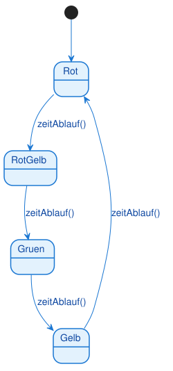

Aufgabe A1 [leicht]: Verkehrsampel
Eine einfache Verkehrsampel durchläuft immer wieder dieselbe Reihenfolge von Lichtern: Rot, Rot-Gelb, Grün, Gelb, und dann wieder Rot. Der Wechsel von einer Farbe zur nächsten erfolgt jeweils durch Zeitablauf.
Modellieren Sie den Lebenszyklus der Ampel als Zustandsdiagramm. Die Ampel hat keinen Endzustand — sie läuft dauerhaft im Kreis.
Musterlösung

@startuml
[*] --> Rot
Rot --> RotGelb : zeitAblauf()
RotGelb --> Gruen : zeitAblauf()
Gruen --> Gelb : zeitAblauf()
Gelb --> Rot : zeitAblauf()
@enduml
Vier Zustände, ein einziges Ereignis (zeitAblauf()), das immer denselben Kreislauf antreibt. Da die Ampel niemals "endet", gibt es keinen Endzustand — nur der Startzustand zeigt, wo der Kreislauf beginnt.